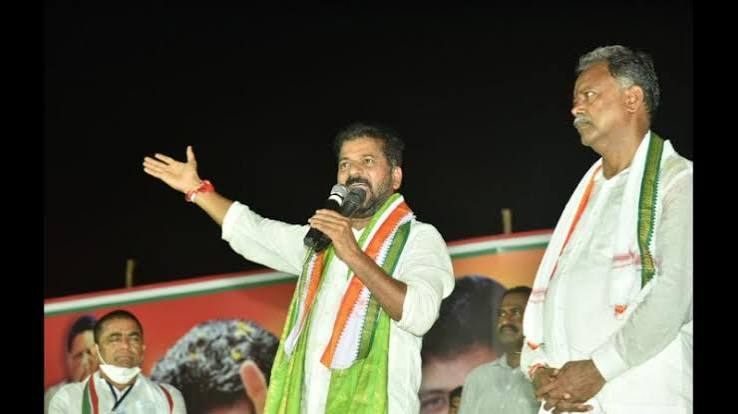

Public Address & Representation
Articulating People's Voice on Stage & in State Assembly
Addressing thousands of constituents alongside Chief Minister A. Revanth Reddy, championing welfare allocations, crop loan waivers, and Singareni mining workers' rights across Jayashankar Bhupalpally.